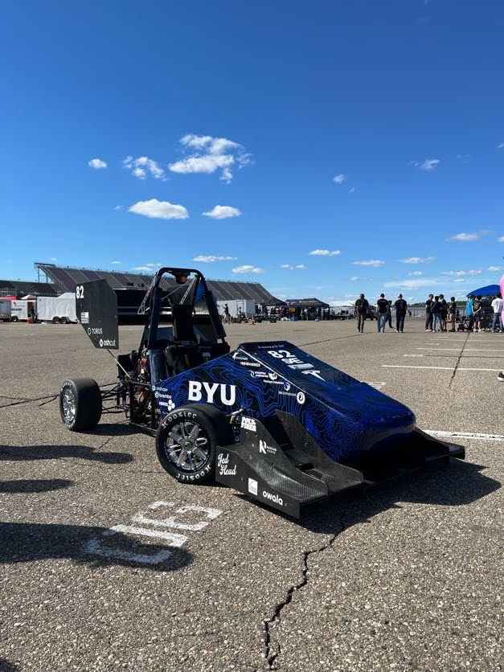

BYU Racing's FSAE electric formula car, the platform this inverter is built for.
Design and build a 3-phase motor inverter to drive BYU Racing's FSAE electric car, converting the 600V battery pack's DC output into the 3-phase AC needed to run the drivetrain motor. Given the scope and risk of working at full pack voltage and current, the team is building the inverter in stages: a 100V/20A prototype to validate the core design, a 300V/50A version to push current handling and thermals further, and finally the full 600V/150A version for the race car.
Starting in January 2026, this is an ongoing team project of about 12 people. I serve as the EE team lead, driving the core design decisions, PCB revisions and power layout for thermal management. I also work alongside a group of MEs on the eventual custom cooling loop enclosure.
The power stage uses 3 SiC MOSFETs in parallel on each side of the half bridges, with 3 half bridges total to produce the 3 output phases. Each half bridge is backed by DC bus capacitors to handle the switching current demand. An STM32 generates the PWM control signals for the gate drivers, and the team is currently developing the current sensing circuitry to close the loop on motor control.


Thermal management has been the biggest challenge on this project. Running multiple SiC MOSFETs in parallel per switch position helps spread conduction losses, and the team designed custom heat sinks along with PCBs laid out specifically for good thermal performance to keep temperatures under control on the benchtop.

Paralleling MOSFETs also introduced a gate timing mismatch between the three parallel devices on each switch position, since even small differences in gate trace length can cause them to switch at slightly different times. The fix was to make sure the gate traces to all three parallel MOSFETs on a given switch were length-matched, which resolved the timing mismatch.
The team has verified the overall design and waveform quality on the 100V/20A prototype, confirming clean switching behavior across a limited number of bench tests. Thermal performance was also spot-checked during these tests and stayed within a reasonable range, though the design has not yet been stress-tested over extended runs. Work is currently underway on the 300V/50A stage before scaling up to the full 600V/150A version for the race car.